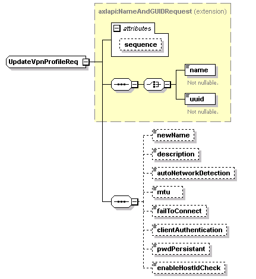

| diagram |
 |
| namespace |
http://www.cisco.com/AXL/API/10.5 |
| type |
extension of axlapi:NameAndGUIDRequest |
| properties |
| base | axlapi:NameAndGUIDRequest |
|
| children |
name uuid newName description autoNetworkDetection mtu failToConnect clientAuthentication pwdPersistant enableHostIdCheck |
| used by |
|
| attributes |
| Name | Type | Use | Default | Fixed | Annotation | | sequence | xsd:unsignedLong | optional | | | |
|
| source |
<xsd:complexType name="UpdateVpnProfileReq">
<xsd:complexContent>
<xsd:extension base="axlapi:NameAndGUIDRequest">
<xsd:sequence>
<xsd:element name="newName" type="axlapi:String50" nillable="false" minOccurs="0" maxOccurs="1"/>
<xsd:element name="description" type="xsd:string" nillable="false" minOccurs="0" maxOccurs="1"/>
<xsd:element name="autoNetworkDetection" type="axlapi:boolean" nillable="false" minOccurs="0" maxOccurs="1"/>
<xsd:element name="mtu" type="axlapi:XInteger" default="1290" nillable="false" minOccurs="0" maxOccurs="1"/>
<xsd:element name="failToConnect" type="axlapi:XInteger" default="30" nillable="false" minOccurs="0" maxOccurs="1"/>
<xsd:element name="clientAuthentication" type="axlapi:XVPNClientAuthentication" default="User and Password" nillable="false" minOccurs="0" maxOccurs="1"/>
<xsd:element name="pwdPersistant" type="axlapi:boolean" nillable="false" minOccurs="0" maxOccurs="1"/>
<xsd:element name="enableHostIdCheck" type="axlapi:boolean" nillable="false" minOccurs="0" maxOccurs="1"/>
</xsd:sequence>
</xsd:extension>
</xsd:complexContent>
</xsd:complexType> |